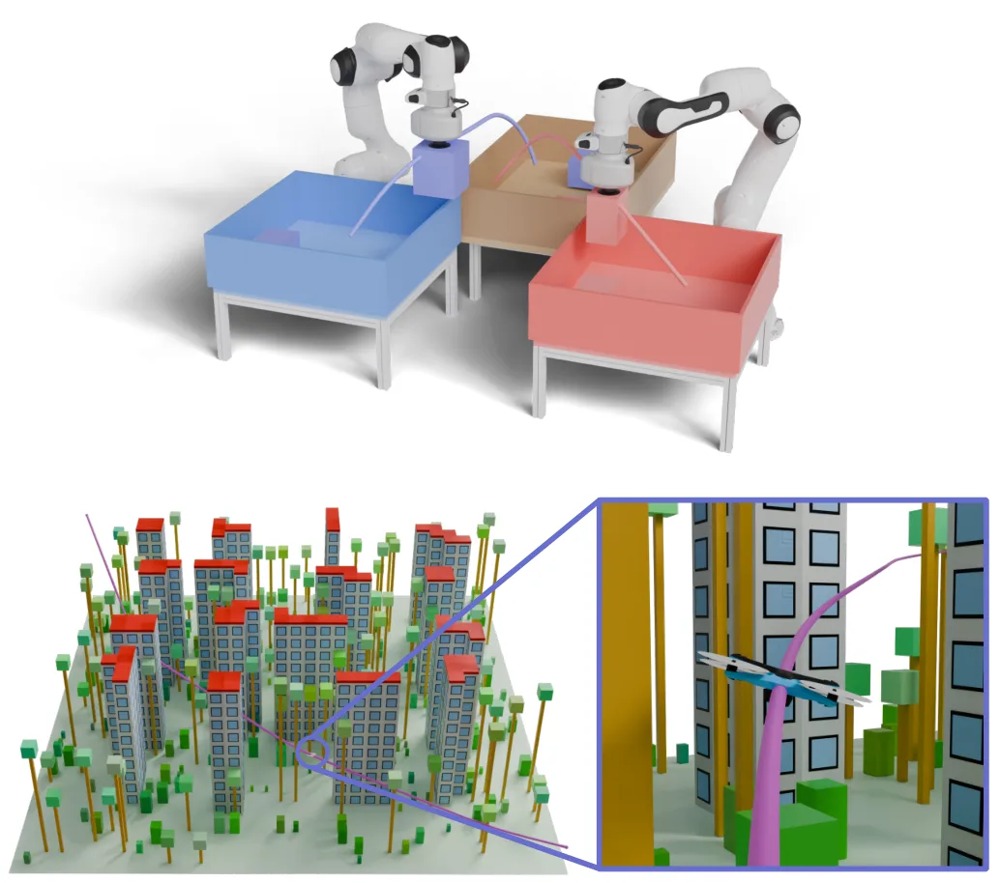
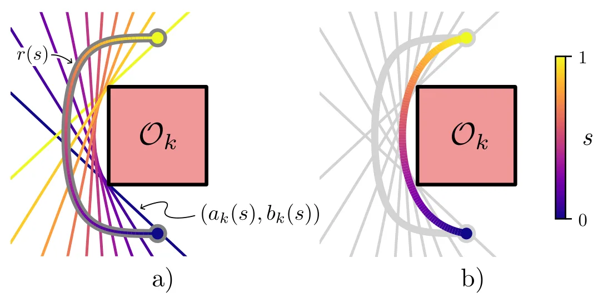
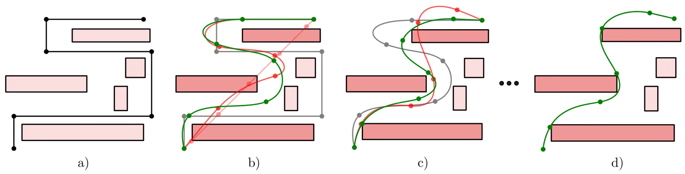
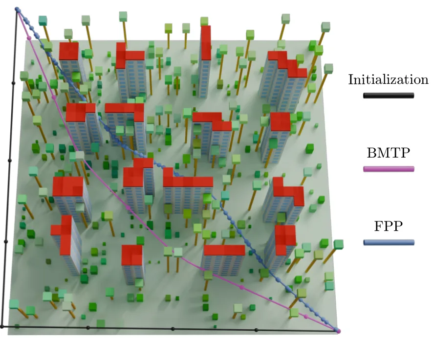
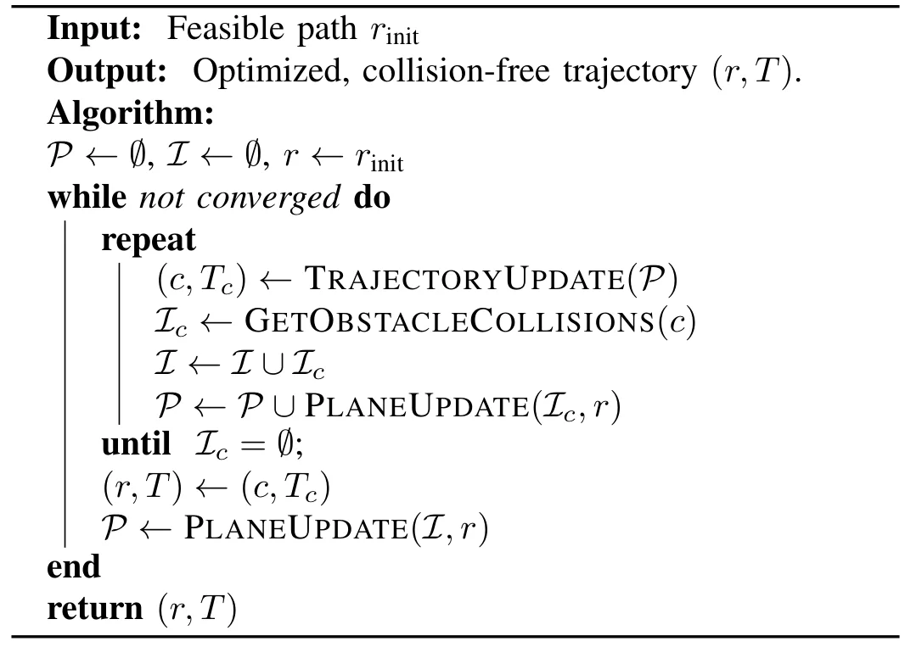
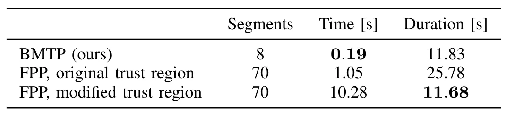

绕凸障碍物的平滑最短时间轨迹双凸优化Biconvex Optimization for Smooth Minimum-Time Trajectories around Convex Obstacles
对无人机和机器人导航规划有实用价值，优化结构与收敛性值得关注；与 SLAM/GNSS 的联系主要在地图后端规划接口。
一句话工作总结
以分离平面和双凸交替优化统一最短时间、平滑性与避碰，并支持任意阶导数约束。
摘要
论文通过变量替换联合凸化最短时间目标和任意阶导数约束，再以时变分离平面处理避碰，把问题化为双凸程序。求解器在最大间隔分离平面计算与轨迹优化之间交替，只为当前轨迹碰撞到的障碍物添加平面，使轨迹能够跨越障碍物并逃离部分局部极小值。方法从简单无碰撞折线初始化可保证收敛，并在无人机导航和双臂料箱卸载上获得与先进分解式规划器相当的计算时间。
We present a biconvex approach for minimum-time motion planning around convex obstacles that is guaranteed to converge, is anytime, and supports derivative constraints to arbitrary order. We jointly convexify the minimum-time objective and all derivative constraints through a change of variables, and handle collision avoidance via time-varying separating planes, reducing the problem to a biconvex program. This program is solved by alternating between computing maximum-margin separating planes and optimizing the trajectory. By only adding planes for obstacles that the current iterate collides with, the trajectory can jump around obstacles and escape local minima. The method is guaranteed to converge starting from a simple collision-free polygonal curve. In our experiments on drone navigation and dual-arm bin unloading, we find that the proposed method reliably produces high-quality trajectories with computation times comparable to state-of-the-art decomposition-based motion planners, while handling a larger class of problems and being substantially more robust to bad initialization. Project page:https://wernerpe.github.io/bmtp-website/
中文解读摘录
- 原题：URHead: A Unified UV-Space Representation for Joint Mesh-3DGS Optimization in Head Avatars
- 作者：Seonghak Lee, Junhee Cho, Jisoo Park, Min-Gyu Park, Jongmin Lee, Ju Hong Yoon, Junseok Kwon
- 推荐评分：8.0/10
- 核心方法：让网格与 3D Gaussian Splatting 共享 UV 参数化，通过联合优化和自适应 Gaussian 采样，自动分配可控几何与照片级细节的表达职责。
- 为何值得看：直接回应 hybrid mesh–3DGS 中结构一致性与可控性难兼得的问题；重点核查 UV 拓扑限制、遮挡区域稳定性以及能否推广到通用动态对象。
图表/页面预览
{kind=link}

{kind=link}

{kind=link}

{kind=link}

{kind=link}

{kind=link}
